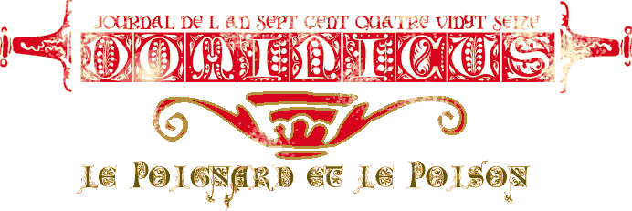
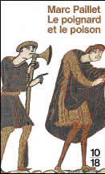
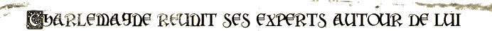

du ciel et des méfaits des hommes, il ne cessait de penser avec nostalgie à sa famille qu'il avait laissée là-bas, à sa femme Elsa et à ses fils Konrad et Waldo, de regretter son hôtel dont la construction était en cours près du palais du roi : l'édification en était, elle, enfin terminée en cette vingt-huitième année de son règne."
"Depuis qu'il avait quitté Aix, le comte Childebrand n'avait pas cessé de maugréer.
Ce n'était certes pas la première mission qu'il accomplissait sur ordre du roi Charles et d'habitude il les acceptait de grand cœur. Mais cette fois-ci, en plein hiver, par un froid à foudroyer les corbeaux en plein vol, sur des routes où il fallait sans cesse se garder de tout et de tous, des pièges de la nature, des colères

L'abbé saxon Erwin appartient à cette élite de savants, d'érudits et d'experts que Charlemagne a réunis autour de lui. Le souverain en a fait un missus dominicus, instrument redoutable de son pouvoir comme va le montrer l'enquête criminelle qu'Erwin mène à Autun en compagnie du comte Childebrand en l'an de grâce 796. Cependant, là où la plupart de ceux qui jugent se contentent d'aveux, de témoignages même douteux, de jugements de Dieu par les braises ou l'huile bouillante, ce Saxon imperturbable et perspicace exige avant tout des preuves, nouveauté troublante pour l'époque. Car celle-ci est volontiers expéditive, elle est déconcertante mais aussi attachante. En une reconstitution scrupuleuse, l'épisode Le Poignard et le poison fait pénétrer dans la vie quotidienne de cette Renaissance carolingienne, esquisse de notre Europe et aube de notre temps.
Historien de formation, Marc Paillet est né en 1918. Après avoir participé activement à la Résistance, il commence une carrière de journaliste qu'il termine comme directeur du Service économique de l'Agence France Presse en 1982, date à laquelle il est nommé membre de la Haute Autorité de la Communication Audiovisuelle. Passionné d'arboriculture, de science-fiction et de musique, il est lui-même pianiste.
Biographie:
"Le poignard et le poison-2581","La Salamandre-2629", "La
gué du diable-2699", "Le sabre du calife-2766", "Le spectre
de la nouvelle lune-2843", "Le secret de la femme en bleu-2942",
"Les Vikings aux bracelets d'or-3057", "Les noyées du grau de
Narbonne-3230".